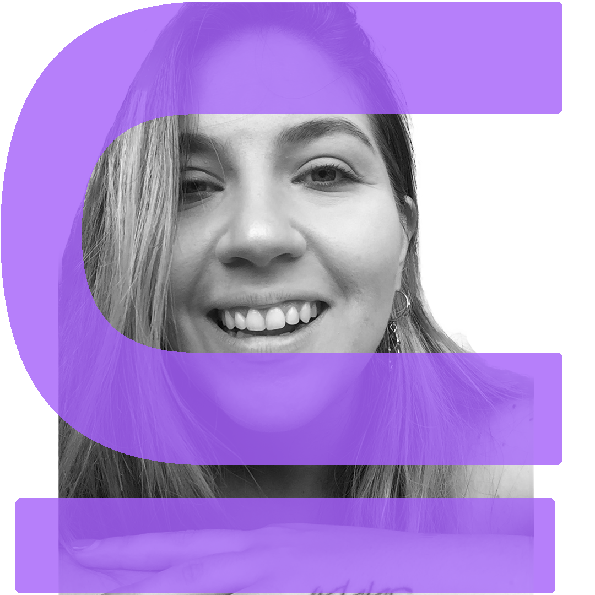

Sobre mi.
Soy diseñadora UX/UI formándome en desarrollo web. Soy Venezolana pero vivo en Buenos Aires, Argentina desde hace 7 años.

Soy diseñadora UX/UI formándome en desarrollo web. Soy Venezolana pero vivo en Buenos Aires, Argentina desde hace 7 años.

Comencé estudiando Comunicación Social. Mi objetivo al principio era ser periodista, pero mientras fui avanzando en la carrera me enamoré de la publicidad, el diseño y el marketing, así que en el 2012 obtuve mi título como Licenciada en Comunicación Social Mención Comunicaciones Publicitarias.
Mientras estudiaba comencé a trabajar (porque queria mi propio dinero, obvio, para mal gastarlo en tonterias). Trabajé por 3 años como asesora de seguros, pero era algo que no me llenaba.
En el 2015 decidí emigrar a este bello país, Argentina. Dos años más tarde abrí mi primer emprendimiento, un local gastronómico y en 2019 otro más que no resistió a la pandemia.
En 2020 comencé a crear páginas web con Wordpress de manera totalmente autodidacta. Me enamoré del diseño, del branding y de lo que en conjunto pueden impactar a las personas, por lo que en 2021 comencé la carrera de Diseño UX/UI y desarrollo web y hoy me dedico a esto de manera freelance.
Creo que cada uno de nosotros tiene una perspectiva y una manera personal de ver el mundo y eso es lo que nos hace aún más únicos en un mundo que cada vez está mas dominado por algoritmos y tecnología.
Por eso le doy mucha importancia al proceso creativo, al camino de construir productos que sean útiles al mundo. Pero crear algo no es suficiente, debemos compartirlo, iterarlo, validarlo y asegurarnos que realmente es útil para el mundo y además podamos seguir mejorándolo y haciéndolo cada vez más escalable y sostenible en el tiempo.
Las diferentes herramientas, las teorías, los frameworks, son sólo el medio. La finalidad debería ser tomar el control de nuestro aprendizaje y conocimiento. Empoderarnos para diseñar sistemas flexibles que nos permitan hacer nuestro mejor trabajo y aportar nuestra perspectiva diferencial al mundo.
Esto se logra al pasar de consumidores a creadores y cómo construimos activos que importen, que empoderen y que trasciendan.